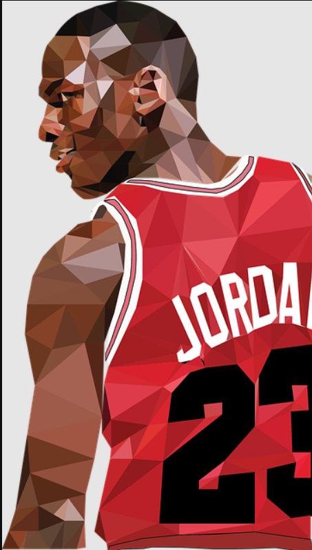

(aussi appelé par ses initiales MJ), né le 17 février 1963 à Brooklyn (New York), est un joueur de basket-ball américain ayant évolué dans le championnat nord-américain professionnel de basket-ball, la National Basketball Association (NBA), de 1984 à 2003, ainsi que dans le championnat international, avec l’équipe USA. En effet, il est considéré comme l'un des plus grands champions de tous les temps, tous sports confondus, et a contribué à populariser internationalement le basket-ball et la NBA à travers le monde dans les années 1980 et 1990.